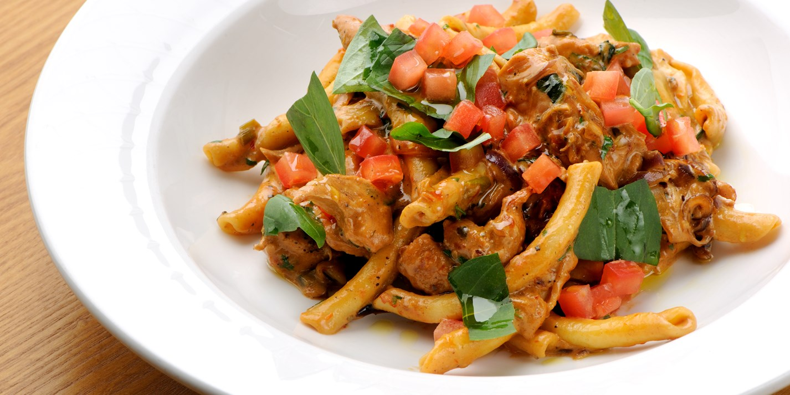
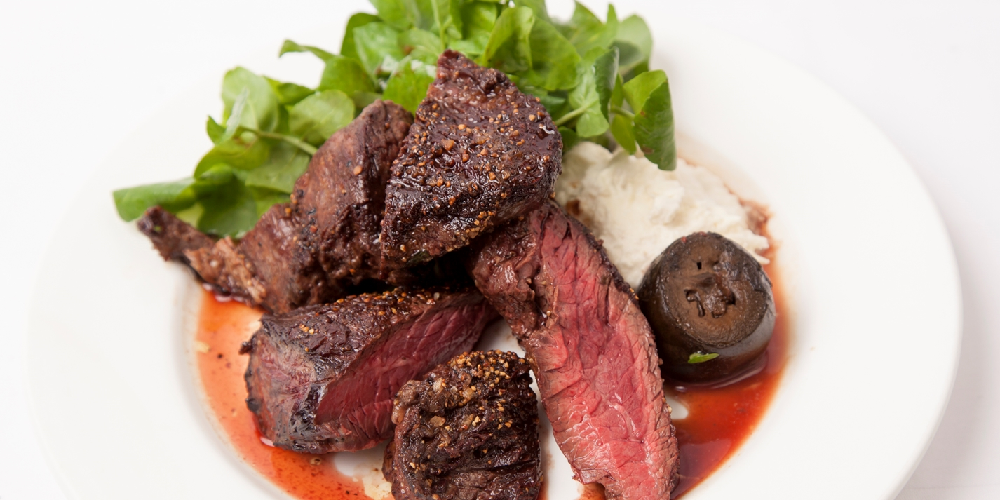
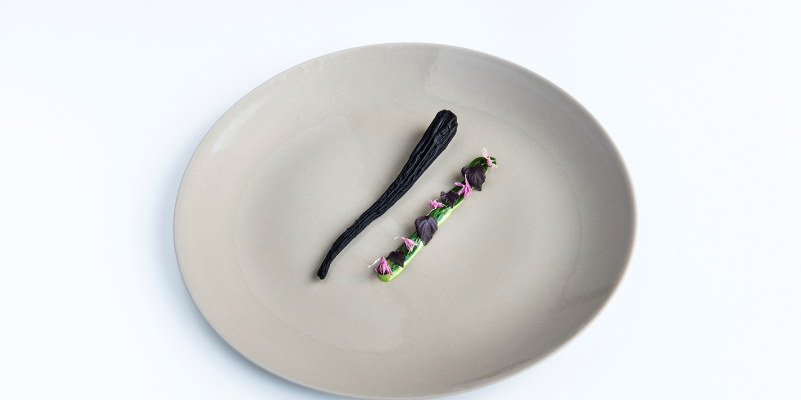
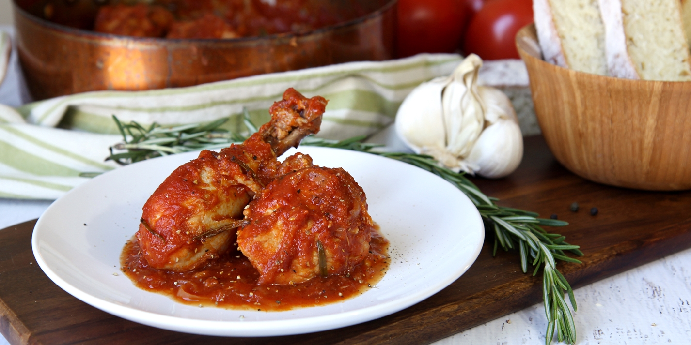
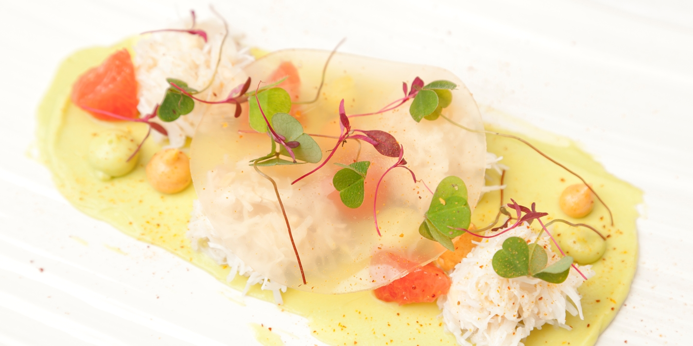

# Головная часть
Таблицу с рейтингом моих любимых/нелюбимых блюд.
# Честь - тело
# Делаем таблицу с атрибутами
| Название блюда | # Столбец 1
Оценка от 1 до 10 | # Столбец 2
Ссылка на рецепт | # Столбец 3
Фото блюда | # Столбец 4
| Паста с куриным чили и красным соусом песто | # Строка с блюдом, рейтингом, ссылкой и фото
Оценка 7.6/10 |
Мишленовская ссылка, переходи! |
 |
| Стейк онглет и маринованные грецкие орехи с хреном | # Строка с блюдом, рейтингом, ссылкой и фото
Оценка 8.2/10 |
Потрясающе |
 |
| Спелая морковь с травами | # Строка с блюдом, рейтингом, ссылкой и фото
Оценка 3.3/10 |
Ужасно, не переходи! |
 |
| Охотничье жаркое из курицы | # Строка с блюдом, рейтингом, ссылкой и фото
Оценка 9.3/10 |
Очень вкусно |
 |
| Королевский краб с авокадо, розовым грейпфрутом и кислицей | # Строка с блюдом, рейтингом, ссылкой и фото
Оценка 9.8/10 |
Невероятно вкусно! |
 |